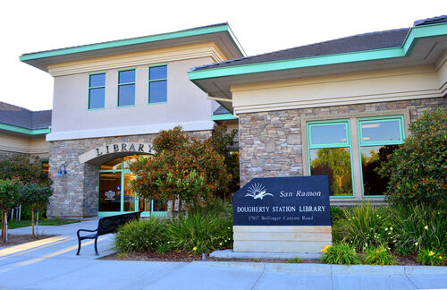
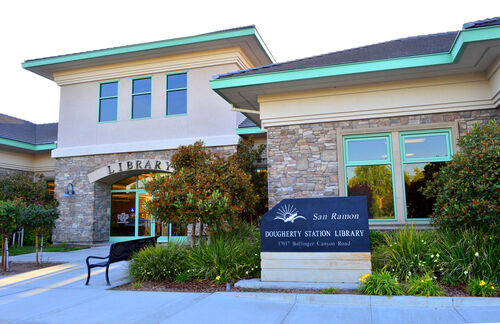

Tegh Gill
I am a first year student at UC Riverside. I am hard working and dedicated. I love to learn and enjoy math. I am proficient at working with the Office 365 suite and Gsuite as well. I am currently taking Math 9B, CS08, English 1B and Dance 05.
From a young age, my mom has pushed me to further my math skills. In elementary school, she bought me workbooks for math. I used to race through them within weeks. I used to find patterns in the tiniest things, from the tiles in a grocery store to the lines in the parking lot.
As I grew older, I began to learn harder math and was surprised when my peers did not share my passion for math. As time went by, peer pressure caused me to lose interest in math. I began to hate my favorite subject.
My middle school math teacher had an interesting way of teaching, which sparked the burnt-out flame once again. As ninth grade came, I was still far behind the people at my new school. My grades weren’t always the best, but that was the part of my day I most looked forward to. I wanted to work my way up, so I started taking summer math classes to advance to learn as much as I could. The summer after ninth grade I advanced in Geometry and the summer after, in Precalculus. This allowed me to take AP Calculus AB in my junior year.
As much as I wanted the challenge of AP math, I was severely underprepared for it. The rigor and amount of work that went into that class was a severe change from any other math class I took. It didn’t help that I had skipped Precalculus the year before. Learning the content was easy. Applying it to tests was what challenged me most. Near the end of the first semester, I was faced with the ultimatum of dropping the course or persevering through. While many of my friends quit, I was done following my friends. I believed that I could persevere through the course and get a higher grade second semester. Unfortunately, COVID-19 hit the world and my A became a “Pass”. I still had faith that I could offset my grade with my AP exam, which I did; proudly earning a 5.
Getting a fresh start when I moved districts was very beneficial because I didn’t have many friends in middle school. It allowed me to reinvent myself and become popular and included. Moving schools allowed me to do just that.
No one knew me, which was ideal and I shaped myself to be how I’ve always wanted to be: outgoing, confident, and funny. Little by little, I started making friends. With an increased popularity came an inflated ego and I quickly embraced this new personality of mine. I started to value my popularity over my friends. I valued my own personal gain over the feelings of others. I valued the approval of others over the privacy of my friends. Over time, my unruly behavior pushed those closest to me away. My mood began to worsen as did my mental health. My grades started slipping. This whole ordeal lasted a sum of 8 months; 8 months of horrible loneliness, causing me to lose interest in school and my hobbies. I felt hopeless for so long. I realized that becoming popular wasn’t all that great and spent the rest of the school year trying to atone for my mistakes.
To make sure that I could fix my mistakes with a stable mood I started Krav Maga. Krav Maga is a martial art that allowed me to push aside my thoughts and problems and focus on hitting the pads. Krav Maga taught me discipline and respect, both values I deeply needed to learn. I had also taken a math class over the summer to advance to higher courses. I had ended up making many friends here, which imbued my confidence once again. When school began, I took steps to apologize to all those who had pushed me away because of my behavior. I showed them that I could be trusted and respected.
As I worked on bettering myself, my grades began to go on a rise. Things were getting better, and I was grateful for a second chance.
Experience
Student Teacher
• Taught kids multiple tech related skills
• Taught LEGO Robotics and scratch coding
• Taught Animation to kids
Volunteer at library
• Responsible for shelving and unshelving books
• Helped patrons with queries about the library
Teaching Assistant
• Taught kids Punjabi
• Taught kids Sikh heritage
Education
UC Riverside
Portfolio


